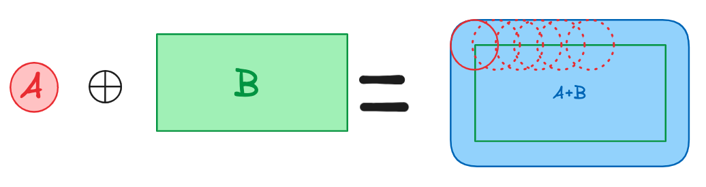

Minkowski sum
Definition
The minkowski sum of sets A and B is defined as A⊕︎B={a + b | a ∈ A, b ∈ B}. This looks like this :
Intuitively, I see the Minkowski sum as running a shape along another, and the "trace" left behind is the resulting set (but it's a very simplified view and the terms are not exact).
Algorithm
Computing the Minkowski sum of two convex polygons P and Q, which have m and n vertices respectively, is straightforward. The result, P⊕Q, is also a convex polygon, bounded by m+n edges. These edges are sorted by their angles relative to the x-axis. Since P and Q are convex, their edges are already sorted by angle, which simplifies the process. To compute the Minkowski sum efficiently, one can start from the bottommost vertices of P and Q and merge their sorted edges, similar to the "merge" step in merge sort. This approach ensures that the Minkowski sum can be computed in O(m+n) time.
For non-convex polygons, a method is decomposition (decompose P and Q as smaller convex polygons and running the above algo pair wise) but it's very dependent on the quality of the decomposition and the nature of the shape. Another better approach is convolution.